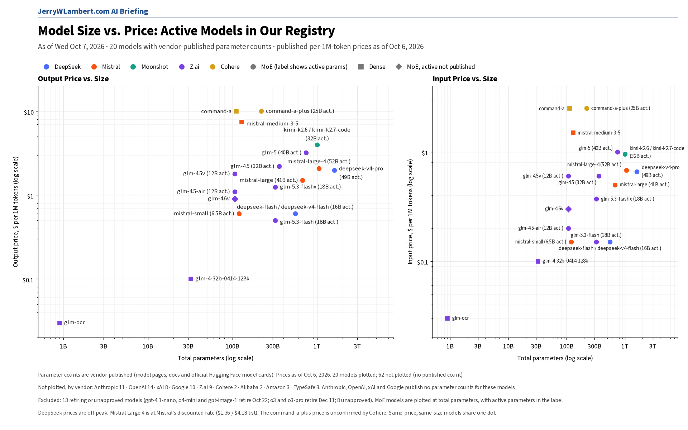
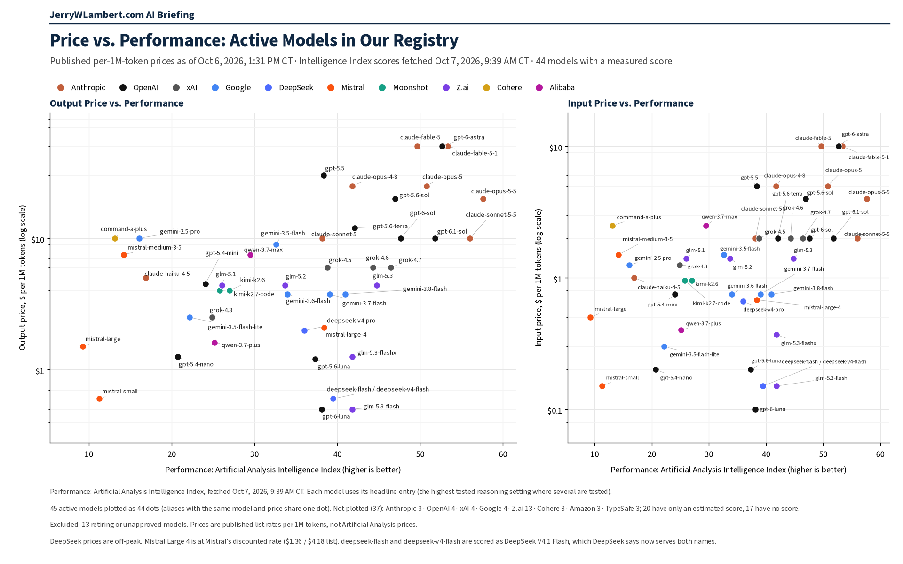

Daily Model Brief, October 7, 2026
Perplexity halves its Decisions API price. Google drops an October image shutdown and raises the cost of a 4K image.
Download PDFExecutive Summary
Perplexity cut both Decisions API models, pplx-decider-v1.1-27b and pplx-decider-v1-27b, from $0.04 to $0.02 per million input tokens. Output stays free.
Google withdrew the October 29 shutdown date for gemini-3.1-flash-image, which now shows no shutdown date, with Nano Banana 2.1 still named as its replacement. Google also repriced 4K output for Nano Banana 2.1 (gemini-nano-banana-2.1): a 4K image now counts as 3,780 tokens, about $0.113 per image, up from $0.0756. The $30.00 per million image-token rate did not change.
Mistral Large 4 (mistral-large-4) stays at its discounted $0.68 input, $0.07 cached and $2.09 output per million tokens (list $1.36 / $0.14 / $4.18), still with no end date. Mistral now lists it at 52B active parameters out of 1.05T total.
Cohere still lists command-r and command-r-plus as deprecated since September 15, 2025 and closed to new customers, with no shutdown date set. Anthropic's Mythos 5 and 5.1 remain limited access, now offered to organizations verified through Anthropic's verification programs.
No published token price changed on the established production models tracked in this brief.
What This Means for Customers
- If you use Perplexity's Decisions API, input cost halves to $0.02 per million tokens and output is still free. Both the v1 and v1.1 models carry the same price.
- Budget Nano Banana 2.1 at about $0.113 per 4K image (batch about $0.0567), not the $0.0756 Google showed yesterday. 1K and 2K images are unchanged at about $0.0336 and $0.0504.
- Work on
gemini-3.1-flash-imageno longer faces an October 29 cutoff. Keep the move to Nano Banana 2.1 on the plan, but it is no longer this month's deadline. - The October 22 deadline holds.
gpt-4.1-nano,o4-miniandgpt-image-1(OpenAI) shut down that evening (CT), and Google'sgemini-omni-flash-previewand Veo 3.1 previews shut down the same day. - Mistral Large 4 is still on sale with no end date. Budget the sale price and plan for a return to list, which is double the sale rate.
- If you still run
command-rorcommand-r-plus, plan a move tocommand-r-08-2024,command-r-plus-08-2024orcommand-a-03-2025, the replacements Cohere recommends. Cohere can set a retirement date at any time.
New Models and Price Changes
Prices in USD per 1M tokens.
| Vendor | Model ID | Status | Input | Cached | Output |
|---|---|---|---|---|---|
| Perplexity | pplx-decider-v1.1-27b | Decisions API. Price cut Oct 7 (was $0.04). | $0.02 | Not listed | Free |
| Perplexity | pplx-decider-v1-27b | Decisions API. Price cut Oct 7 (was $0.04). | $0.02 | Not listed | Free |
| gemini-nano-banana-2.1 | 4K image output repriced Oct 7: 3,780 tokens per image (was 2,520). | $1.50 | Not listed | $7.50 text $30.00 image (4K about $0.113) | |
| Mistral | mistral-large-4 | Public Preview. Sale price unchanged, no end date. | $0.68 (list $1.36) | $0.07 (list $0.14) | $2.09 (list $4.18) |
- Nano Banana 2.1 batch rates are half the standard rates, so a batch 4K image is now about $0.0567 (was $0.0378).
- Anthropic, OpenAI, xAI, DeepSeek, Moonshot, Z.ai, MiniMax, Meta and TypeSafe published token prices were unchanged since yesterday's brief.
- Alibaba's price page could not be checked this morning, and Amazon, Microsoft and ByteDance did not publish readable price tables. Their last confirmed prices stand.
Deprecations and Retirements
| Vendor | Model ID | Shutdown (CT) | Replacement | Note |
|---|---|---|---|---|
| OpenAI | gpt-4.1-nano o4-mini gpt-image-1 | Thu Oct 22, 2026, 7:00 PM CT | gpt-5.6-luna gpt-5.6-terra gpt-image-2.5-sunburst or gpt-image-2.5-flare | Unchanged. OpenAI lists Oct 23 with no time; 7:00 PM CT Oct 22 is 00:00 UTC Oct 23. |
| gemini-omni-flash-preview | Thu Oct 22, 2026 (time not stated) | gemini-omni-1.1-flash | Unchanged. | |
| veo-3.1-generate-preview veo-3.1-fast-generate-preview veo-3.1-lite-generate-preview | Thu Oct 22, 2026 (time not stated) | gemini-omni-1.1-flash | Unchanged. | |
| gemini-3.1-flash-image | No shutdown date announced | gemini-nano-banana-2.1 | Changed today. Yesterday Google listed Thu Oct 29, 2026. | |
| gemini-3.1-flash-tts-preview gemini-2.5-flash-preview-tts gemini-2.5-pro-preview-tts | Tue Nov 17, 2026 (time not stated) | gemini-3.8-flash-tts or gemini-3.8-flash-lite-tts | Unchanged since yesterday. | |
| gemini-3.1-flash-live-preview gemini-2.5-flash-native-audio-preview-12-2025 | Tue Nov 17, 2026 (time not stated) | gemini-3.8-live | Unchanged since yesterday. | |
| Anthropic | claude-sonnet-4-5-20250929 | Mon Nov 30, 2026 (time not stated) | claude-sonnet-5-5 | Unchanged. |
| Anthropic | claude-haiku-4-5-20251001 | Not sooner than Thu Oct 15, 2026; no date set | None named | Watch item. Active today. |
| Cohere | command-r command-r-plus | Deprecated Sep 15, 2025; no shutdown date set | command-r-08-2024 command-r-plus-08-2024 command-a-03-2025 | Closed to new customers; existing users keep access until retirement. |
- Unverified: Google's deprecations page shows gemini-2.5-flash-image shutting down Mon Mar 15, 2027, with gemini-3.1-flash-lite-image as the replacement, while Google's pricing page still says it shut down Oct 2, 2026. Confirm with Google before you budget either date.
- Perplexity will retire its Agent API and Router API routes to older OpenAI models (openai/gpt-5.4, gpt-5.4-mini, gpt-5.4-nano, gpt-5.2, gpt-5.1, gpt-5 and gpt-5-mini) at 7:00 PM CT on Fri Oct 23, 2026, as announced in yesterday's update.
Around the Market
A quiet morning for headline token rates. The moves are at the edges: Perplexity halved the input price on its Decisions line, and Google changed what a 4K Nano Banana 2.1 image costs by counting more tokens per image rather than by touching the per-token rate. Google also pulled the October 29 shutdown it had set only yesterday for gemini-3.1-flash-image, a reminder that published retirement dates can move in both directions. Mistral kept Large 4 on sale for a second day with no end date, OpenAI's pricing, model and deprecation pages were unchanged, and Anthropic changed only who can apply for Mythos access, not its price. xAI, DeepSeek, Moonshot, Z.ai, MiniMax, Meta and TypeSafe left published rates alone.
Bottom Line
Nothing in today's moves raises the cost of established production work. Re-cost any 4K image pipeline on Nano Banana 2.1 at about $0.113 per image, take the Perplexity Decisions cut if you use it, and keep October 22 as the hard date for the OpenAI and Google preview retirements.
Model Size vs. Price

Across the 20 active models whose vendors publish parameter counts, price tracks active parameters far more closely than total size. Mistral Large 4 (1.05T total, 52B active) sits mid-pack at $0.68 input and $2.09 output per 1M tokens. Prices as of October 6, 2026.
Price vs. Performance

Across the 45 active models with a measured Artificial Analysis Intelligence Index score (fetched Oct 7, 2026, 9:39 AM CT), price rises with performance only loosely (rank correlation 0.45 on output price). Several models scoring near 40 cost $0.60 or less per 1M output tokens, including GLM-5.3-Flash, GPT-6 Luna and DeepSeek V4.1 Flash, while the top scorer, Claude Opus 5.5 at 57.6, costs $20.
All times Central. Prices, dates and model IDs are taken from first-party vendor pricing, model and deprecation pages as of 8:45 AM CT on October 7, 2026; chart prices are as of October 6, 2026. Performance scores are from the Artificial Analysis Intelligence Index. Items that could not be confirmed are marked unverified.